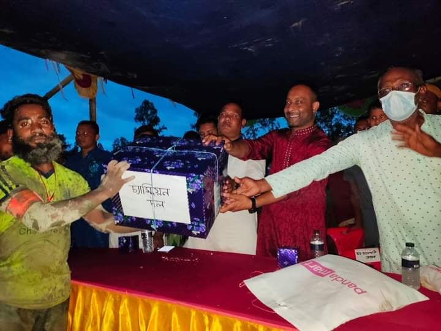

"ক্রিড়াই শক্তি,ক্রিড়াই বল" এই প্রতিপাদ্যকে সামনে রেখে শুরু হয়েছিলো শ্যামপুর যুব সংঘ কর্তৃক আয়োজিত শ্যামপুর ফুটবল টুর্নামেন্ট-২০২০ এর পঞ্চম আসরের খেলা। খেলা শুরু হওয়ার একমাসের মধ্যে লিগ কমিটি কর্তৃক টুর্নামেন্টের ফাইনাল দেওয়ার কথা থাকলেও মহামারী করোনার প্রকোপ বৃদ্ধি এবং মাঠে জলাবদ্ধতাসহ আনুষঙ্গিক বিভিন্ন জটিলতার কারণে পরবর্তীতে লিগ কমিটির সিদ্ধান্ত পরিবর্তন করা হয়।এরই প্রেক্ষিতে দীর্ঘ একবছর পর আজ ১৮ জুন রোজ শুক্রবার বিকেল ৪:৩০ ঘটিকায় ইছামতী বিলের দক্ষিণপার্শ্বে এবং শ্যামপুর পূর্বপাড়া ইবতেদায়ী মাদ্রাসা সংলগ্ন সবুজ মাঠ প্রাঙ্গণে বর্ণাঠ্য চার দলীয় ফুটবল টুর্নামেন্টের চুড়ান্ত পর্বের খেলা অনুষ্ঠিত হয়।
খেলার শুরু হওয়া থেকে শেষ পর্যন্ত ছিলো প্রচুর উত্তেজনা ও আক্রমণাতক। খেলার প্রথমার্ধের ১০ মিনিটের সময় নাহিদ ইসলাম মালিকানাধীন ইয়াং স্টার স্পোর্টিং ক্লাবের ১০নং জার্সি পরিহিত খেলোয়াড় স্বপন প্রথম গোল করে নিজ দলকে এগিয়ে রাখে।পক্ষান্তরে জাহাঙ্গীর হোসেন মালিকানাধীন বি-ডাবলু স্পোর্টিং ক্লাবের খেলোয়াড়রা এক গোল পিছিয়ে থাকে এবং গোল সমতা করার জন্য মরিয়া হয়ে ওঠে। অতঃপর জাহাঙ্গীর হোসেন মালিকানাধীন বি-ডাবলু স্পোর্টিং ক্লাবের হৃদয় তার টুর্ণামেন্টের ব্যাক্তিগত প্রথম গোল করে ম্যাচ সমতা করে। খেলার দু'লের দফায় দফায় আক্রমণে নাহিদ ইসলাম মালিকানাধীন ইয়াং স্টার স্পোর্টিং ক্লাবের মেহেদীর জোড়া গোল এবং জাহাঙ্গীর হোসেন মালিকানাধীন বি-ডাবলু স্পোর্টিং ক্লাবের আশিকের জোড়া গোল ও রাকিবের এক গোলে ইয়াং স্টার স্পোর্টিং ক্লাবকে পরাস্ত করে।
খেলায় নির্দিষ্ট সময় অতিক্রম করার পর নাহিদ ইসলাম মালিকানাধীন ইয়াং স্টার স্পোর্টিং ক্লাবকে ৪-৩ গোলে পরাজিত করে চ্যাম্পিয়ন হওয়ার গৌরব অর্জন করে জাহাঙ্গীর হোসেন মালিকানাধীন বি-ডাবলু স্পোর্টিং ক্লাব।
শ্যামপুর পূর্বপাড়া ইবতেদায়ী মাদ্রাসা সংলগ্ন সবুজ মাঠ প্রাঙ্গণে বর্ণাঠ্য আয়োজনে পয়েন্ট ভিত্তিক ৪ দলীয় ফুটবল টুর্নামেন্টের চুড়ান্তপর্বের প্রতিযোগিতাপূর্ণ অনুষ্ঠিত ফাইনাল খেলা দেখার জন্য শত শত ফুটবল প্রেমীদের ঢলে প্রাণ ফিরে পায় শ্যামপুর পূর্বপাড়া ফুটবল মাঠ।
ফুটবল খেলার মাঠে চূড়ান্তপর্ব খেলা অনুষ্ঠিত হওয়ার পূর্বে মাঠের ভিতর কবুতর ও ফানুস উড়িয়ে ফাইনাল খেলার আনুষ্ঠানিক উদ্বোধন করেন শাহ আলম ভুঁইয়া এবং এ সময় মাঠের চারপাশে শ্যামপুর,হায়দারপুর,গোপালপুর, কাজিপুরা ও আশেপাশের বিভিন্ন এলাকা থেকে আগত দর্শকদের সমাগম পরিলক্ষিত হয়।
আবু হাসেম আলীর সঞ্চালনায় উক্ত খেলায় সভাপতিত্ব করেন মোঃ গোলাম আজম কিবরিয়া তালুকদার এবং সহ-সভাপতি হিসেবে উপস্থিত ছিলেন মোঃ আব্দুর রাজ্জাক আকন্দ । উক্ত খেলায় প্রধান অতিথি হিসেবে উপস্থিত থেকে বিজয়ীদের হাতে পুরুষ্কার তুলে দেন কামারখন্দ উপজেলার ভাইস চেয়ারম্যান জনাব সেলিম রেজা সেলিম।এসময় তিনি সকল খেলোয়াড়, লিগ কমিটির সদস্যসহ আগত দর্শকদের উদ্দেশ্যে বলেন, খেলাধুলা-ক্রিড়াচর্চার অভ্যাস সমাজের অপরাধ প্রবণতা কমায়। মাদকমুক্ত কর্মক্ষম যুবসমাজ গড়তেও ক্রিড়াচর্চার গুরুত্ব অপরিসীম। তিনি আরো বলেন, প্রতিযোগিতায় অংশনেয়া প্রত্যন্ত অঞ্চলের এসব ফুটবলারদের সুন্দর খেলায় আমি অভিভূত। খেলায় ম্যান অফ দ্যা ম্যাচ হিসেবে নির্বাচিত হয় আশিক সেখ।
উক্ত খেলায় বিশেষ অতিথি হিসেবে উপস্থিত ছিলেন জনাব মোঃ লুৎফর রহমান বিডিআর (চেয়ারম্যান, ৪নং রায়দৌলতপুর ইউনিয়ন পরিষদ), আব্দুল লতিফ প্রমাণিক, শরিফুল ইসলাম মঞ্জু সহ আরো অনেকে।
খেলায় প্রধান অতিথি,বিশেষ অতিথি ব্যাতিত আরো সন্মানিত ব্যাক্তিবর্গের মধ্যে উপস্থিত ছিলেন, মোক্তার হোসেন শেখ, শাহ আলম মাষ্টার, আব্দুর রাজ্জাক শেখ, তানভীর আকন্দ, খলিলুর রহমান আকন্দ এবং গ্রামের প্রবীণ মুরুব্বিসহ আরো অনেকে। ফাইনাল খেলা পরিচালনা করেন রমজান মন্ডল এবং সহকারী হিসেবে পরিচালনা করেন কবীর খান ও সুজন আকন্দ। খেলায় ধারাভাষ্যকার হিসেবে ছিলেন আনসার আলী প্রাং ও আল-মামুন প্রাং।
শ্যামপুর ফুটবল টুর্ণামেন্টের চুড়ান্তপর্বে বি-ডাবলু স্পোর্টিং ক্লাবের শিরোপা অর্জন।
১৮ জুন, ২০২১
